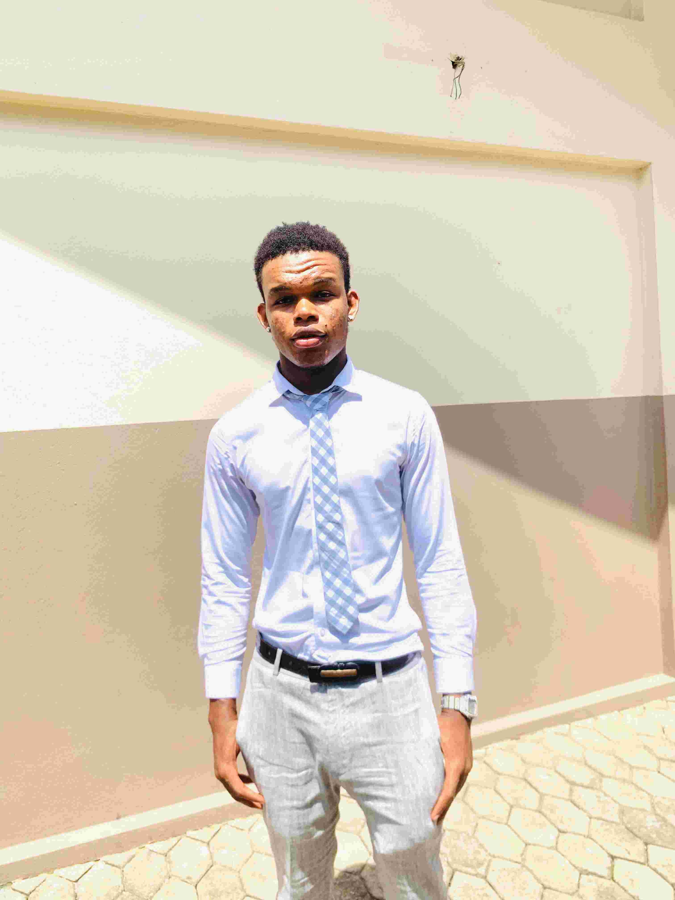

Benoni Ben Knuckles | WDD130

My name is Benoni Ben Knuckles, and I am currently a student
studying Software Development have always been interested in technology
and how things work behind the scenes, especially computers, websites,
and programming. I decided to study Software Development because I want
to learn how to create useful applications and improve my skills in coding.
I know I still have a lot to learn, but I am excited about the journey and
the opportunities that will come with it.